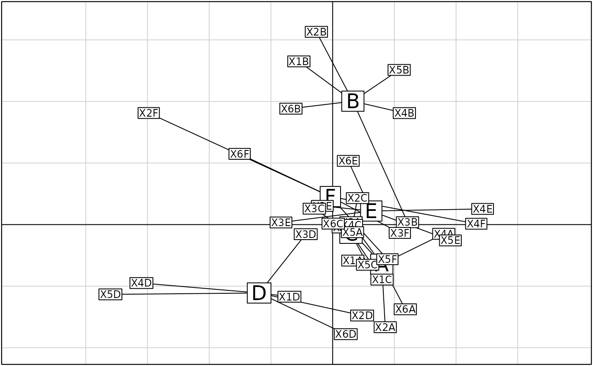
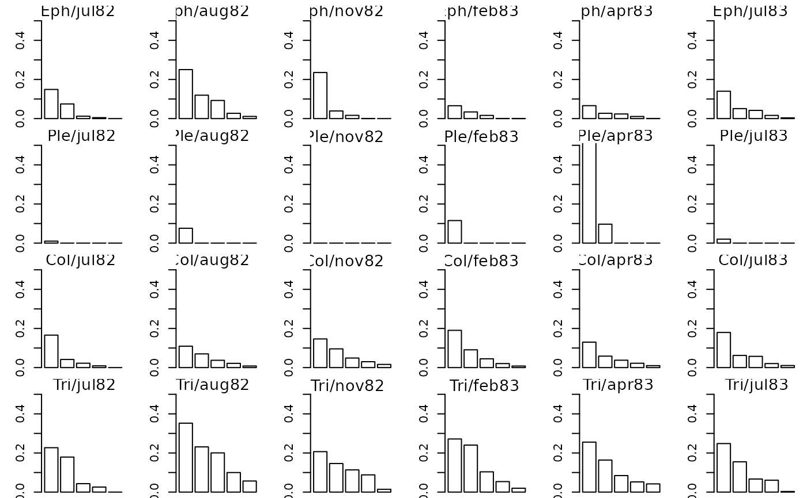

Internal Correspondence Analysis
witwit.coa.Rdwitwit.coa performs an Internal Correspondence Analysis.
witwitsepan gives the computation and the barplot of the eigenvalues
for each separated analysis in an Internal Correspondence Analysis.
Usage
witwit.coa(dudi, row.blocks, col.blocks, scannf = TRUE, nf = 2)
# S3 method for witwit
summary(object, ...)
witwitsepan(ww, mfrow = NULL, csub = 2, plot = TRUE)Arguments
- dudi
an object of class
coa- row.blocks
a numeric vector indicating the row numbers for each block of rows
- col.blocks
a numeric vector indicating the column numbers for each block of columns
- scannf
a logical value indicating whether the eigenvalues bar plot should be displayed
- nf
if scannf FALSE, an integer indicating the number of kept axes
- object
an object of class
witwit- ...
further arguments passed to or from other methods
- ww
an object of class
witwit- mfrow
a vector of the form "c(nr,nc)", otherwise computed by a special own function 'n2mfrow'
- csub
a character size for the sub-titles, used with
par("cex")*csub- plot
if FALSE, numeric results are returned
Value
returns a list of class witwit, coa and dudi (see as.dudi) containing
- rbvar
a data frame with the within variances of the rows of the factorial coordinates
- lbw
a data frame with the marginal weighting of the row classes
- cvar
a data frame with the within variances of the columns of the factorial coordinates
- cbw
a data frame with the marginal weighting of the column classes
References
Cazes, P., Chessel, D. and Dolédec, S. (1988) L'analyse des correspondances internes d'un tableau partitionné : son usage en hydrobiologie. Revue de Statistique Appliquée, 36, 39--54.
Author
Daniel Chessel Anne-Béatrice Dufour anne-beatrice.dufour@univ-lyon1.fr Correction by Campo Elías PARDO cepardot@cable.net.co
Examples
data(ardeche)
coa1 <- dudi.coa(ardeche$tab, scann = FALSE, nf = 4)
ww <- witwit.coa(coa1, ardeche$row.blocks, ardeche$col.blocks, scann = FALSE)
ww
#> Duality diagramm
#> class: witwit coa dudi
#> $call: witwit.coa(dudi = coa1, row.blocks = ardeche$row.blocks, col.blocks = ardeche$col.blocks,
#> scannf = FALSE)
#>
#> $nf: 2 axis-components saved
#> $rank: 29
#> eigen values: 0.06858 0.06325 0.04254 0.03566 0.02911 ...
#> vector length mode content
#> 1 $cw 35 numeric column weights
#> 2 $lw 43 numeric row weights
#> 3 $eig 29 numeric eigen values
#>
#> data.frame nrow ncol content
#> 1 $tab 43 35 modified array
#> 2 $li 43 2 row coordinates
#> 3 $l1 43 2 row normed scores
#> 4 $co 35 2 column coordinates
#> 5 $c1 35 2 column normed scores
#> other elements: lbvar lbw cbvar cbw
summary(ww)
#> Internal correspondence analysis
#> class: witwit coa dudi
#> $call: witwit.coa(dudi = coa1, row.blocks = ardeche$row.blocks, col.blocks = ardeche$col.blocks,
#> scannf = FALSE)
#> 2 axis-components saved
#> eigen values: 0.06858 0.06325 0.04254 0.03566 0.02911 ...
#>
#> Eigen value decomposition among row blocks
#> Axis1 Axis2 weights
#> Eph 0.0511 0.0563 0.2879
#> Ple 0.1154 0.0263 0.0653
#> Col 0.0204 0.0709 0.3703
#> Tri 0.1403 0.069 0.2766
#> mean 0.0686 0.0633
#>
#> Axis1 Axis2
#> Eph 214 256
#> Ple 110 27
#> Col 110 415
#> Tri 566 302
#> sum 1000 1000
#>
#> Eigen value decomposition among column blocks
#> Comp1 Comp2 weights
#> jul82 0.0109 0.0706 0.1859
#> aug82 0.0413 0.1064 0.1797
#> nov82 0.017 7e-04 0.1054
#> feb83 0.1916 0.032 0.1364
#> apr83 0.1385 0.0613 0.1895
#> jul83 0.0243 0.0736 0.2031
#> mean 0.0686 0.0633
#>
#> Comp1 Comp2
#> jul82 29 207
#> aug82 108 302
#> nov82 26 1
#> feb83 381 69
#> apr83 383 184
#> jul83 72 236
#> sum 1000 1000
#>
if(adegraphicsLoaded()) {
g1 <- s.class(ww$co, ardeche$sta.fac, plab.cex = 1.5, ellipseSi = 0, paxes.draw = FALSE,
plot = FALSE)
g2 <- s.label(ww$co, plab.cex = 0.75, plot = FALSE)
G <- superpose(g1, g2, plot = TRUE)
} else {
s.class(ww$co, ardeche$sta.fac, clab = 1.5, cell = 0, axesell = FALSE)
s.label(ww$co, add.p = TRUE, clab = 0.75)
}

witwitsepan(ww, c(4, 6))
